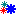
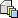

Trigger build manually
error message
Build necessary condition
*
The build necessary condition is an OGNL expression used to determine if current build is necessary. The following are some commonly used expressions:
always
: Always perform build
never
: Never perform build
alwaysIfFailed
: Always perform build when last build is failed. However, if last build is successful, build will be performed only when modifications are detected in related VCS, or new builds are generated in its dependent schedules.
vcsModified or dependencyNewer
: Perform build when modifications are detected in related VCS, or new builds are generated in its dependent schedules. Refer to the
User's Guide
for details.
dependencySuccessful and (vcsModified or dependencyNewer)
: Perform build when modifications are detected in related VCS, or new builds are generated in its dependent schedules, in addition that all these new generated builds are successful. Refer to the
User's Guide
for details.
Build as version
Optionally, if you specify a value here, Luntbuild will use this value as the build version instead of using "next build version" property. You should carefully specify the version here not to cause potential duplication with any other version. Format of this version is the same as the "next build version" property.
 Build type
Select the build type for this build, clean build can be more reliable,
but can be slower, incremental build can be quicker, but less reliable.
Post-build strategy
Choose the post-build strategy for this build. There are four strategies:
do not post-build
: do not execute the post-build script after the build.
post-build when success
: execute the post-build script only when the build was successful.
post-build when failed
: execute the post-build script only when the build has failed.
post-build always
: always execute the post-build script after the build.
 Label strategy
Choose the label strategy for this build. There are following strategies:
label successful builds
: label the repository only for the successful builds.
do not label
: do not label the repository after the build.
label always
: always label the repository after the build.
NOTE. If a build is not labeled when it is initially built, it will not be rebuildable later.
Notify strategy
Choose the notify strategy for this build. There are following strategies:
notify when status changed
: send the notification when the status of the current build changes compared to the last build. That is, notification will be sent when the current build succeeds and the last build failed, or the current build fails and the last build succeeded.
notify when failed
: send the notification only when the build failed.
notify when success
: send the notification only when the build succeeds.
do not notify
: do not send the notification after the build.
notify always
: always send the notification after the build.
notify when failed or status changed
: send the notification only when the build failed or when the status of the current build changes compared to the last build.
Dependent triggering strategy
Choose dependency triggering strategy for this build. There are four strategies:
trigger schedules this depends on
: trigger schedules current schedule depends on, and this triggering will happen before current build. For example, if current schedule builds a product which contains several components in other schedules, you can use this strategy to make sure all components used by this product is up to date.
trigger schedules depends on this
: trigger schedules depends on current schedule, and this triggering will happen after current build. For example, if current schedule builds a component which is used by products in other schedules, you can use this strategy to make sure all products using this component is up to date.
trigger all dependent schedules
: This is a combination of the above two strategies, that is, trigger schedules current schedule depends on before current build, and trigger schedules depends on current schedule after current build .
do not trigger any dependent schedules
: trigger neither schedules current schedule depends on, nor schedules depends on current schedule.
When to build
minutes
(specify a time with "yyyy-MM-dd hh:mm" format)
(specify a time with "hh:mm" format)